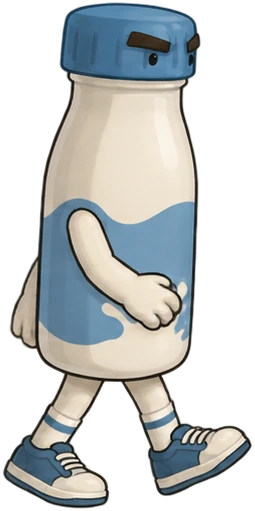

Preparando el recorrido…
Cargando escenarios y animaciones
LA MALALECHE.
Nacida para salir del molde.
De la fábrica al fondo del mar.
Cinco niveles. Una botella que se niega a rendirse.
Joystick: presioná un botón para detectarlo.

El camino comienza acá.
Los dos primeros recorridos forman el nivel 1. El Molde es el nivel 2 completo, también accesible al ganar la batalla del frigorífico. La ciudad es el nivel 3, también accesible al terminar El Molde.
Ajustes y controles
Comprobar compatibilidad del joystick
Joystick: stick izquierdo / cruceta para mover · ✕ saltar · □ disparar · R1 correr · △ torbellino (nivel 5) · OPTIONS pausa. En menús: cruceta, ✕ aceptar y ○ volver. La detección depende del navegador; no se garantiza compatibilidad con el navegador de PS4.
En el taller: H prueba el daño · K prueba la rotura · R reinicia. En celular, usá los controles táctiles.
En pausa.
El camino continúa.
¡Ganaste! Llegaste a la entrada del nivel 2. El supermercado El Molde te espera; tu victoria quedó guardada.
Catálogo de diseños
Cada enemigo y objeto nuevo puede reemplazarse por una imagen propia. Guardá un PNG con fondo transparente en assets/custom/ con el nombre indicado (-0, -1, -2… para animar), mirando hacia la derecha, y recargá la página. Instrucciones completas en assets/custom/LEEME.md.